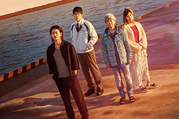
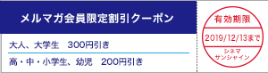
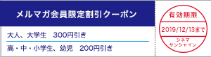

|
シネマサンシャインメールマガジン 2019/11/8号 |
|
毎月15日はシネマサンシャインデー
どなたさまでも1,200円でご鑑賞いただけます。 次回は来週11/15（金）です！ ※3D、4DX、IMAX、ATMOS、dts-x、ScreenXBESTIA、は別途追加料金が必要となります。 |
オススメ作品
『ターミネーター：ニュー・フェイト』
11/8（金）公開
©2019 Skydance Productions, LLC, Paramount Pictures Corporation and Twentieth Century
リンダ・ハミルトン(サラ・コナー)とアーノルド・シュワルツェネッガー(T-800)のタッグが『ターミネーター２』以来初めてシリーズに復帰。 シリーズ最大のヒット作『ターミネーター２』のその後の世界が描く、T2の正当な続編。 30億人の命が奪われる"審判の日"は、サラ・コナーとT-800の活躍により回避されたはずだったが…。 ふたたび新たな脅威が現れ、人類は想像を超える危機を迎える…!!
監督：ティム・ミラー
出演：アーノルド・シュワルツェネッガー、リンダ・ハミルトン、マッケンジー・デイヴィス、ナタリー・レヴェス、ガブリエル・ルナ、ディエゴ・ボネータ
出演：アーノルド・シュワルツェネッガー、リンダ・ハミルトン、マッケンジー・デイヴィス、ナタリー・レヴェス、ガブリエル・ルナ、ディエゴ・ボネータ

『ひとよ』
11/8（金）公開

©2019「ひとよ」製作委員会
ある家族に起きたひとつの事件。 それは、母親とその子どもたち三兄妹の運命を激変させた。 その夜から、心の傷を抱えたまま別々の人生を歩んだ家族は、15年後に再会。 葛藤と戸惑いの中で、一度崩壊した家族の絆を取り戻そうともがき続けた先に訪れる結末とは―――。 佐藤健主演による「家族の絆」の歓びと哀しみがこころ打つ、感涙のヒューマンドラマ。
監督：白石和彌
出演：佐藤健、鈴木亮平、松岡茉優、佐々木蔵之介、田中裕子
出演：佐藤健、鈴木亮平、松岡茉優、佐々木蔵之介、田中裕子

上映作品
11/8（金）公開
『シネマ歌舞伎「女殺油地獄（幸四郎）」』
11/8（金）公開
『Re:ゼロから始める異世界生活 氷結の絆』
11/8（金）公開
『ルパン三世 カリオストロの城』
11/15（金）公開
『エンド・オブ・ステイツ』

11/15（金）公開
『ブライトバーン／恐怖の拡散者』
ニュース
○前作は序章にすぎなかった…姉妹の物語がついに完結へ―『アナと雪の女王２』11月22日（金）より公開！
日本で2014年に公開されるや、日本中に“レット・イット・ゴー”の歌声があふれ、世代を超えた社会現象を巻き起こす”奇跡“を成し遂げたディズニー・アニメーションの金字塔『アナと雪の女王』。 運命に引き裂かれた姉妹を主人公に、凍った心をとかす“真実の愛”を描いた前作は、全世界で“アナ雪旋風”を巻き起こし、アニメーション映画歴代No.1を樹立。 そして今、全世界で社会現象を巻き起こした『アナと雪の女王』の待望の続編が完成した。 数々の記録を打ち立てた前作のスタッフ&キャストが、2019年＜冬＞、自ら築いた伝説を凌駕する新たなる感動と驚きで世界中を満たす。
主人公はもちろんアレンデール王国の女王となった姉のエルサと妹のアナ。 深い絆で結ばれ、王国を治めながら仲間たちと共に幸せに暮らしている。 だが、ある日、エルサだけが“不思議な歌声”を耳にする。 姉妹はその歌声に導かれ、大切な仲間クリストフとオラフと共に、エルサの“力”の秘密を解き明かす、驚くべき冒険の旅に出る。 なぜ、エルサだけに雪と氷を自由自在に操ることが出来る力が与えられたのか。 彼らの冒険は、知られざる姉妹の過去の物語をも紐解いていく―。
監督を務めたのは、前作から続投のクリス・バックと、前作で女性初のディズニー長編アニメーション監督デビューを果たしたジェニファー・リー。
本作についてクリス・バック監督は「『アナと雪の女王』と『アナと雪の女王２』は２作で１つの完成された物語」と語る。 さらに、「本作では、キャラクターたちが前作から成長しているのを目の当たりにすることになる。 彼らは人生を変える壮大な旅に出かけることになるんだ。 」と、彼女たちの人生をも揺るがす壮大な冒険になると語っています。
前作は序章にすぎなかった…姉妹の壮大な物語はついに完結へ―。 『アナと雪の女王２』は１１月２２日(金)より公開！
主人公はもちろんアレンデール王国の女王となった姉のエルサと妹のアナ。 深い絆で結ばれ、王国を治めながら仲間たちと共に幸せに暮らしている。 だが、ある日、エルサだけが“不思議な歌声”を耳にする。 姉妹はその歌声に導かれ、大切な仲間クリストフとオラフと共に、エルサの“力”の秘密を解き明かす、驚くべき冒険の旅に出る。 なぜ、エルサだけに雪と氷を自由自在に操ることが出来る力が与えられたのか。 彼らの冒険は、知られざる姉妹の過去の物語をも紐解いていく―。
監督を務めたのは、前作から続投のクリス・バックと、前作で女性初のディズニー長編アニメーション監督デビューを果たしたジェニファー・リー。
本作についてクリス・バック監督は「『アナと雪の女王』と『アナと雪の女王２』は２作で１つの完成された物語」と語る。 さらに、「本作では、キャラクターたちが前作から成長しているのを目の当たりにすることになる。 彼らは人生を変える壮大な旅に出かけることになるんだ。 」と、彼女たちの人生をも揺るがす壮大な冒険になると語っています。
前作は序章にすぎなかった…姉妹の壮大な物語はついに完結へ―。 『アナと雪の女王２』は１１月２２日(金)より公開！
★前作『アナと雪の女王２』で明かされなかった謎とは？公式サイトでチェック！
https://www.disney.co.jp/movie/anayuki2/anayuki-nazo.html/
https://www.disney.co.jp/movie/anayuki2/anayuki-nazo.html/

©2019 Disney. All Rights Reserved.
○シネマサンシャイン大和郡山 11/22（金）「IMAXレーザー」導入決定！
シネマサンシャイン大和郡山に「IMAXレーザー」を11/22（金）に導入することを決定いたしました。 IMAXレーザーのオープニング作品は「アナと雪の女王２」（11月22日公開）です。
「IMAXレーザー」は、IMAXシアター専用にゼロから設計されたシアターで、より鮮やかで明るく、深みあるコントラストの超高解像度映像の4Kレーザー投影システムとリアルで圧倒的な臨場感のある音を再現する12chサウンドシステムで今までとは違う映画体験ができるプレミアムシアターです。
尚、シネマサンシャイン大和郡山のIMAXシアターは工事の為11/21迄休館となります。

「IMAXレーザー」は、IMAXシアター専用にゼロから設計されたシアターで、より鮮やかで明るく、深みあるコントラストの超高解像度映像の4Kレーザー投影システムとリアルで圧倒的な臨場感のある音を再現する12chサウンドシステムで今までとは違う映画体験ができるプレミアムシアターです。
尚、シネマサンシャイン大和郡山のIMAXシアターは工事の為11/21迄休館となります。
○「シネマサンシャインららぽーと沼津」10/4（金）オープンしました！
全10スクリーン・約1,800席、最新の映画上映設備を備えたシネマコンプレックスとして「三井ショッピングパーク ららぽーと沼津」内にオープンいたします。 プレミアムシアターとして全世界的な評価を集めるIMAX社の最新鋭シアター「IMAXレーザー」。 体感型アトラクションシアター「4DX」と、3面マルチプロジェクション上映システム「ScreenX」が融合した超・体感型シアター「4DX with ScreenX」。 佐々木興業オリジナル開発の劇場規格「BESTIA（ベスティア）」など、最先端のシネマテクノロジーが結集した新世代のシネマコンプレックスです。

○シネマサンシャイン「おやこシネマ」続々開催決定！
子育て中のママ、パパがお子さま連れで一緒に映画を鑑賞できる上映会を開催いたします。
小さいお子さま連れでの映画鑑賞は…
「びっくりして泣いてしまったら…」
「暗いので子供が怖がるかも…」
「子供がおしゃべりしたり歩き回るかも…」
そんな不安や心配がつきないママ、パパの為の上映会です。
音量が通常よりも小さめで、照明も明るめに設定されており、
小さなお子様でも怖がることなくご鑑賞いただけます。
今後の実施は下記となります。
11月26日(火)『アナと雪の女王２』※沼津、重信のぞく
11月26日(火)『決算！忠臣蔵』※沼津、重信のみ
小さいお子さま連れでの映画鑑賞は…
「びっくりして泣いてしまったら…」
「暗いので子供が怖がるかも…」
「子供がおしゃべりしたり歩き回るかも…」
そんな不安や心配がつきないママ、パパの為の上映会です。
音量が通常よりも小さめで、照明も明るめに設定されており、
小さなお子様でも怖がることなくご鑑賞いただけます。
今後の実施は下記となります。
11月26日(火)『アナと雪の女王２』※沼津、重信のぞく
11月26日(火)『決算！忠臣蔵』※沼津、重信のみ
○4DX追加料金が高校生以下半額の500円に！【期間限定】
シネマサンシャインの4DXシアターでは、現在キャンペーン期間中につき高校生以下（高校生・中学生・小学生・幼児）の4DX追加料金（通常 1,000円）が半額の500円になります！
通常鑑賞料金（1,000円）＋4DX追加料金（500円）＝1,500円
※3D作品の場合は上記にさらに400円が加算されます。
※一部特別興行は適用とならない場合があります。
※無料鑑賞（アプリ会員のポイントによる無料鑑賞、招待券等）は適用外。
▼シネマサンシャイン4DXシアター導入劇場はこちら
グランドシネマサンシャイン、平和島、沼津、ららぽーと沼津、大和郡山、北島、エミフルMASAKI、姶良

通常鑑賞料金（1,000円）＋4DX追加料金（500円）＝1,500円
※3D作品の場合は上記にさらに400円が加算されます。
※一部特別興行は適用とならない場合があります。
※無料鑑賞（アプリ会員のポイントによる無料鑑賞、招待券等）は適用外。
▼シネマサンシャイン4DXシアター導入劇場はこちら
グランドシネマサンシャイン、平和島、沼津、ららぽーと沼津、大和郡山、北島、エミフルMASAKI、姶良
○シネマサンシャインの新しい会員サービス『シネマサンシャイン リワード』スタート！
もっともっとオトクに映画を観よう！６ポイントで１回鑑賞無料！毎週木曜は1,100円鑑賞などお得なサービスがいっぱいです！シネマサンシャインアプリから新しい会員サービスへ登録いただけます。 是非ご登録ください。
全劇場で対応開始！
※年会費500円あり
全劇場で対応開始！
※年会費500円あり

○メルマガ会員限定割引クーポンプレゼント！
メルマガ会員様限定でお得な割引クーポンをプレゼント！
以下の画面をチケット購入時にご提示ください。
PCでご覧のお客様は該当部分を印刷してご提示ください。

以下の画面をチケット購入時にご提示ください。
PCでご覧のお客様は該当部分を印刷してご提示ください。

※有効期限は12月13日までになります。
※割引券1枚で2名様まで有効。 他の割引サービスとの併用はできません。
※特別興行などご利用いただけない場合がございます。
※インターネット購入（e-box、ムビチケ)ではご利用いただけません。
※期間中何回でもご利用頂けます。
池袋、ユーカリが丘、大和郡山、北島、下関、姶良の自動券売機では下記QRをご利用ください。
【一般・大学生】
【高校生以下】
【一般・大学生】
【高校生以下】
ムービークイズ
○前回のクイズ
11/1公開『IT／イット THE END “それ”が見えたら、終わり。 』で共演するビル・スカルスガルドとジェームズ・マカヴォイは「IT／イット」前作以外にも共演作があります。 その作品はなんでしょう。
11/1公開『IT／イット THE END “それ”が見えたら、終わり。 』で共演するビル・スカルスガルドとジェームズ・マカヴォイは「IT／イット」前作以外にも共演作があります。 その作品はなんでしょう。
答え：アトミック・ブロンド
○今回のクイズ
11/8公開『ターミネーター：ニュー・フェイト』でシリーズ復帰したアーノルド・シュワルツェネッガーですが、愛娘の結婚相手は有名俳優です。 その人は誰でしょう。
ヒント：マーベルコミック映画でヒーローを演じています。
11/8公開『ターミネーター：ニュー・フェイト』でシリーズ復帰したアーノルド・シュワルツェネッガーですが、愛娘の結婚相手は有名俳優です。 その人は誰でしょう。
ヒント：マーベルコミック映画でヒーローを演じています。
答えは、次回のシネマサンシャインメールマガジンで！